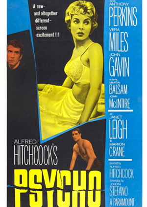

Phoenix officeworker Marion Crane is fed up with the way life has treated her. She has to meet her lover Sam in lunch breaks and they cannot get married because Sam has to give most of his money away in alimony. One Friday Marion is trusted to bank $40,000 by her employer. Seeing the opportunity to take the money and start a new life, Marion leaves town and heads towards Sam's California store. Tired after the long drive and caught in a storm, she gets off the main highway and pulls into The Bates Motel. The motel is managed by a quiet young man called Norman who seems to be dominated by his mother.
